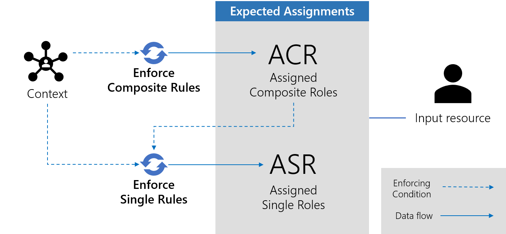
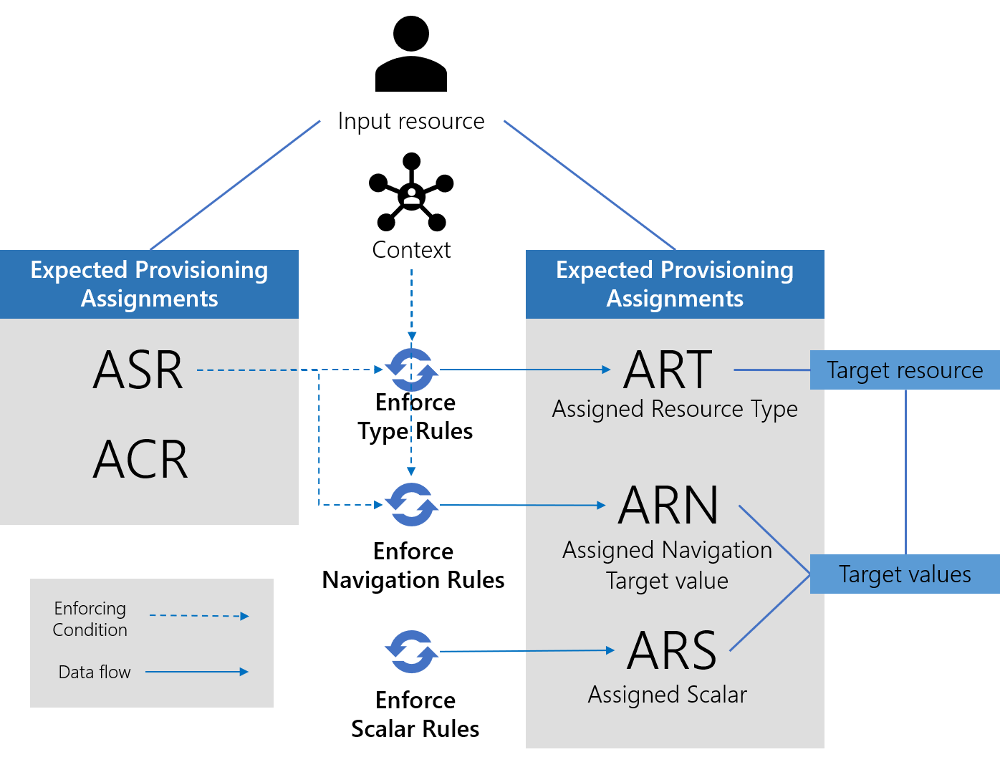
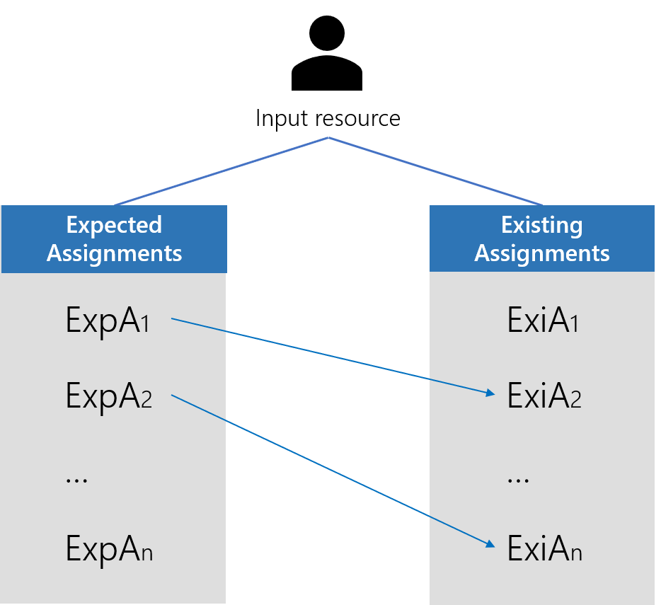

Evaluate Policy
Evaluate Policy is the core algorithm of the assignment policy. See the Assignment Policy topic for additional information.
The algorithm is applied by the server to a resource. It has the following responsibilities:
- Enforcing the assignment rules: the algorithm outputs a list of expected assignments for the input resource
- Evaluating risks
- Managing assignment lifecycle: updating provisioning states
- Purging expired assignments
See the Risk Management topic for additional information.
Overview
The main responsibility of the Evaluate Policy is to compute, for every fed resource, the set of assignments of entitlements that comply with the assignment policy.
That set is composed of roles that should be assigned to the resource and of scalar and navigation assignments that should exist for that resource as an owner. The latter are in fact values of target resource properties to fulfill from that resource fed in the algorithm. Those assignments are referred to as the expected assignments. Manual assignments and derogations are included as well, as they become rules within the assignment policy.
Evaluate Policy also identifies the existing assignments. They represent the actual assignments read (or more accurately, deduced) from the managed systems' resources.
Finally, the differences between the existing assignments and the expected assignments are computed. As a result, a set of non-conforming assignments is revealed, to be fixed by provisioning or validated as derogations.
Later, provisioning orders are edited, validated by a knowledgeable user and sent to the agent for connectors to fulfill and fix the differences.
Evaluate Policy is executed by the task Usercube-Compute-RoleModel, usually included in a regularly scheduled provisioning job.
See the Connectors, Compute Role Model Task , and Jobs topics for additional information.
The Algorithm Steps
Step 1 – Select resources from the resource repository, all the relevant properties for every resource.
This includes:
- Attribute values of the resource itself;
- Attribute values of the resources pointed to by a navigation property from the current resource;
- All existing assignments for these resources and their properties such as provisioning state and workflow state;
- Every property of the source resource, if the resource is a target in an owner/target relationship;
- Every property of the target resource, if the resource is an owner in an owner/target relationship;
Extracting and computing, in an acceptable amount of time, such a load of data is no trivial matter.
The number of resources to consider is of the order of 100 000 entries for a system managing 10 000 identities among 4 managed systems.
To improve execution time, two optimizations are used:
- Identity Manager uses batching to perform the database request. The
SELECTquery is divided into sets of smaller queries called batches. The size of a batch is configurable in the Identity Manager-Compute-RoleModel, with theBatchSelectSizeattribute. - Identity Manager only selects resources for which a new assignment computation is needed. They are resources updated during the last incremental synchronization, and resources that depend on them. They are identified by the dirty flag, set during incremental synchronization. See the Upward Data Synchronization topic for additional information.
NOTE: For very few edge cases, dependencies between resource values can be difficult to identify within Identity Manager. An example involves entity property expressions using LINQ syntax. See the
Entity Type
topic for additional information. A second- or third-order binding used in such an expression actually defines a dependency. But Identity Manager does not account for it, because of performance-reliability trade-offs. That means a resource R1, using such an expression to compute one of its properties values from another resource R2 property value, might not be updated even if R2 has been updated by incremental synchronization. This too can be fixed by using complete synchronization once a day.
Step 2 – Compute expected assignments
The second step is building the expected assignment list by applying the assignment rules to the input resource.
This step builds a list, from scratch, of every expected assignment, both role assignments and assignments issued from provisioning rules.
The list contains:
-
Automatic assignments, inferred from context-based rules
-
Automatic assignments, inferred from other assignments, according to role-based rules
-
Manual assignments previously created and derogations previously validated
-
Assignments updated by an automation rule. See the Automation Rule topic for additional information.
To build the list, the algorithm first goes through composite role rules, single role rules, resource type rules, navigation rules, and applies them in that order. See the Composite Role Rule, Single Role Rule, and Resource Type topics for additional information. This takes care of automatic assignments. Every step influences the following one: single roles can be inferred from composite roles that have just been assigned by a reviewer or an automation rule for example.
Then, manual assignments and derogations are added to the expected assignments list. They are extracted from the database, where they were saved after being added from the UI or validated through the UI, and are considered part of the role model. Manual assignments are identified by the Approved workflow state. Derogations are identified by the Found and Historic workflow states.
Role assignments as derogations are displayed to the end-user for confirmation in the Role Reconciliation screen. As long as they are not denied, they are considered a part of the role model and will not be considered as a non-conforming difference to be fixed by provisioning. They are deduced from actual resources and resource values found in the managed system, that do not comply with the assignment rules, and are displayed in the Resource Reconciliation screen.
Let's detail the rule enforcement mechanisms.
Match context rules
Dimensions are really the basis of an assignment process. See the Entitlement Management topic for additional information.
Before starting, a context rule is applied, giving for the input resource:
- The dimension values
- The time period validity of every assignment computed during this Evaluate Policy iteration
Computing expected role assignments
Role assignments, on the other hand, are the outcome of the assignment process. See the Entitlement Management topic for additional information.
Role assignments are the output of composite role rules and single role rules enforcement. The outcome of those rules, as assigned composite roles and assigned single roles, is conditioned by the input resource's context. They are the image of the status of trust and privilege granted to a resource-identity.

Enforcing composite role rules
The first rules that are enforced are the composite role rules. See the Composite Role Ruletopic for additional information.
For every selected resource, this step enforces composite role rules. That means assigning a specific composite role to the input resource, based on its context's dimension values. This new assignment is materialized into a new object called an assigned composite role, stored in the UP_AssignedCompositeRoles table. The resource becomes the owner of the assigned composite role.
Manual and derogatory assignments of composite roles found in the database are also added to the expected assignments list.
Then automation rules are enforced on assigned composite roles. See the Automation Rule topic for additional information.
NOTE: Enforcing automation rules on an assignment means to find, for each assignment, the matching automation rule, looking at the last review or the creation date, comparing it to the time defined in the rule and, if needed, apply the rule decision that may approve or decline the assignment.
Enforcing single role rules
Then, single role rules are enforced. That means assigning a specific single role to the input resource based on its context and existing assigned composite roles, i.e. the composite roles currently assigned to the resource. Both assigned composite roles freshly created by enforcing composite role rules and those already in the database are taken into account. In the former case, single roles created are said to be inferred.
This is materialized into a new object called an assigned single role, stored in the UP_AssignedSingleRoles table. The resource becomes the owner of the assigned single role.
Manual and derogatory assignments found in the database of single roles are also added to the expected assignments list.
Then automation rules are enforced on assigned single roles.
Expected provisioning assignments
Fulfillment is just the consequence of the role assignment process. See the Entitlement Management topic for additional information.
Provisioning-orders-to-be are the output of resource type rules, navigation rules and scalar rules. The outcome of those rules, as assigned resource types, assigned resource navigation, and assigned resource scalar is conditioned by the input resource assigned roles, issued during the first expected role assignments computation or even earlier. They are the exact image of technical provisioning orders that are to be executed by the agent, after being validated by a knowledgeable user. See the Resource Type topic for additional information.

Enforcing resource type rules
Resource type rules are enforced. This means creating and adding assigned resource types to the expected assignments list. This means enforcing the need for a resource of that type to be created in the managed systems, with the input resource as its owner.
Then automation rules are enforced on assigned resource types.
A further step will correlate, to find the actual target resource if it exists. If not, it will eventually become a provisioning order to create such a resource.
This can be seen as assigning a target resource to an owner. It's still important to note that the act of assigning a resource to an owner almost always is the consequence of a role assignment. Use cases for which a single, isolated resource, is "assigned" (i.e. created with specific values) is rare and is more of a solution to a specific technical problem.
Enforcing navigation rules
Finally, navigation rules are enforced. They aim to complete the information about the resource to be created because of the assigned resource types. If the type rule is the what, this is the how.
For every assigned resource type, associated navigation rules are enforced.
Navigation rules are conditioned on the resource's assigned single roles. If a specific single role is found as assigned to the owner resource of the assigned resource type (i.e. the input resource of the algorithm), an assigned resource navigation is created in the UP_AssignedResourceNavigation table, with the resource as its owner. The assigned resource navigation will eventually translate into a provisioning order.
The assigned resource navigation is hence the consequence, in the form of a provisioning-order-to-be, of assigning a role to a resource.
This means also no assigned resource type, no navigation assignment. Resource type rules are a prerequisite for the associated navigation rules to be enforced.
Enforcing scalar rules
Finally, the scalar rules associated with the target's resource type are enforced and become assigned resource scalars that will also result in a provisioning order.
For every assigned resource type, associated scalar rules are enforced.
They also aim to complete the information about the resource to be created because of the assigned resource types.
Found manual assignments and derogation of resource types with their associated navigation and scalar assignments are added as well.
Step 3 – Match existing assignments with expected assignments

The expected assignments list is now built.
For every expected/computed assigned resource type, assigned single role and assigned composite role, the algorithm finds the matching existing assignment, from the list of assignments.
The existing list of assignments in the current database is composed of:
-
Assignments computed by the last Evaluate Policy;
-
Assignments created by the classification task, including
FoundandHistoricones issued from the analysis of the resource values from the managed system.
The result is a list of expected assignments that have a counterpart in the list of existing assignments.
Step 4 – Assignments cleansing / purge
Some assignments are given an expiration date at creation (see the first step, context rules enforcement). This is the step where expired assignments are removed from the expected assignments list.
They will not be deleted, but historized. The validTo column of the UP_Assigned* is updated.
Others have been manually denied via the provisioning review screen, or must be canceled because of rules or resource value changes. Those are deleted too.
The result is a list of really existing assignments, without the expired, canceled or explicitly unwanted ones for any reason.
Step 5 – Correlation
Resource correlation rules are enforced: for every expected assigned resource type, the algorithm looks for a target resource that correlates the owner, which is the input resource.
If found, that correlated resource becomes the target of the assigned resource type. If not, a provisioning order of creation is written.
A word about correlation. Correlation is achieved by using resource correlation rules. Each rule applies to a resource type. It defines for the source entity type a quantity computed from its attributes. It does the same for the target entity types. Those quantities are called correlation keys. For a given assigned resource type, the correlation algorithm tries to match the owner correlation key with all available resources of entity type target. If one is found equal, the matching resource becomes target of said assigned resource type. For every resource, correlation keys are computed by a regularly scheduled task and stored in the database.
Step 6 – Handle assignment lifecycle
Expected assigned resource scalars and assigned resource navigations matching existing counterparts are found.
For every assigned resource type, assigned resource scalar and assigned resource navigation, the provisioning state is updated according to the correlated target resource values, the matching existing assignment state and the provisioning state transition algorithm.
For expected assignments that have a matching existing counterpart, the correlated target resource values are analyzed. If they match the expected resource values, that means that the last provisioning order has been indeed well executed. The provisioning state of the associated assignment is switched to Applied. Same goes for the role assignments from which those scalar and navigation assignments originated.
For expected assignments that do not have a matching existing counterpart, they receive their Pending or Blocked provisioning state.
Blocked assignments are submitted for validation in the provisioning review screen. Blocked assigned resource types are associated with a confidence level that describes the level of confidence of the correlation between source and target. The confidence level is a configuration of the resource correlation rules.
The workflow state is also analyzed; assignments with Approved (or Cancellation) have been approved (or denied) and can now be provisioned.
|
Workflow state |
Description |
|---|---|
|
0—None |
Used for Identity Manager's internal computation |
|
1—Non-conforming |
The assignment is not supported by a rule.
|
|
2—Requested - Missing Parameters |
The assignment has been requested via a workflow, but does not specify at least one required parameter for the role. |
|
3—Pre-existing |
The assignment is not supported by a rule, and it existed before the production launch.
|
|
4—Requested |
The assignment is requested via a workflow, but not yet added. NOTE: Usually displayed in workflows' summaries.
|
|
5—Calculated - Missing Parameters |
The assignment was done by a rule which does not specify at least one required parameter for the role.
|
|
8—Pending Approval |
The assignment must be reviewed manually by a knowledgeable user.
|
|
9—Pending Approval 1 of 2 |
The assignment is pending the first approval on a two-step workflow. |
|
10—Pending Approval 2 of 2 |
The assignment is pending the second approval on a two-step workflow. |
|
11—Pending Approval 1 of 3 |
The assignment is pending the first approval on a three-step workflow. |
|
12—Pending Approval 2 of 3 |
The assignment is pending the second approval on a three-step workflow. |
|
13—Pending Approval 3 of 3 |
The assignment is pending the third approval on a three-step workflow. |
|
16—Approved |
The assignment has completed all approval steps.
|
|
17—Declined |
The assignment is explicitly declined during one of the approval steps. |
|
20—Cancellation |
The assignment is inferred by a role that was declined.
|


Step 7 – Delta
The existing and expected assignment lists are compared and yield a third list of differences, i.e. non conforming values in the managed systems that need to be fixed.
That list will eventually become provisioning orders that will be sent to the agent for fulfillment.
What constitutes a difference?
Expected resource and their values not matching the existing resource and their value, for an existing assignment with an Applied or Executed provisioning state.
If the existing assignment is not yet Applied the agent might still be preparing the provisioning. A resource value that does not comply with the role model, but is in the fixing process (meaning an assignment with a provisioning state of Pending or Sent) will not come up in the UI.
Step 8 – Saving the result
At this point, Evaluate Policy has computed expected assignments for the resource, by applying rules and purging expired assignments.
Expected assignments are:
- Assigned composite roles and assigned single roles, representing roles assigned to the resource
- Assigned resource scalars and assigned resource navigations, representing scalar and navigation properties to fulfill to a target resource from that source resource, the ownership relationship between source and target being materialized by an assigned resource type.
Expected assigned are written to the database, they will be the basis for the next step: fixing differences. The writing is optimized by using bulk insert methods.
To enhance the writing performances, it's not actual assigned* that are written, but updates from the existing ones, using the delta computed at step 7.
For fine-grained assignments such as assigned resource scalars and assigned resource navigations, Identity Manager stores the policy value i.e. the value computed by Evaluate Policy (not yet fulfilled) and the current value i.e. the value currently held by the target resource in the managed systems.
From there, it is possible to retrieve the differences between existing and expected assignments for that resource, at any time.
Remember, the goal of building a set of assignments is twofold:
- Building a catalog of existing assignments as assigned roles for non-technical users to consult.
- Fulfill target values from source resources so as the managed systems comply with the role model.
The catalog of existing assignments is now available: they are assigned* with an Applied provisioning state. Non technical-users can read assigned single roles and assigned composite roles. Technical users will be more interested in assigned resource scalars and assigned resource navigations.
Fulfilling target values from source resources is going to take the form of provisioning orders, computed from assigned resource scalars and navigations in the Pending or Blocked state.
Fixing Differences
The engine has computed a list of expected assignments. The difference with the managed system state, as a list of resource values that infer differences in role assignments, can be fixed by provisioning the expected assignments to the managed systems.
Some provisioning orders have to be reviewed by a knowledgeable user. Those are provisioning orders computed from assigned* with a Blocked provisioning state. The UI provides screens to perform review and validation.
Every provisioning order is to fix a difference that has been caused by a change in the source resource values or in its target resources.
Let's see in details what kind of differences Identity Manager deals with, and what kind of change in the managed systems triggers them.
The workflow state of an assignment helps identify the nature of a difference between that assignment and the managed systems.
UI overview
Differences are displayed in the following screens:
- Provisioning Review displays
Blocked(nonFound, nonHistoric) assigned resource types, assigned resource navigations and assigned resource scalars. They must be reviewed by a knowledgeable technical end-user. They are assignments mirroring legit provisioning orders recently computed by the Evaluate Policy. - Resource Reconciliation displays
FoundandHistoricassigned resource types, assigned resource navigations and assigned resource scalars. This is where non-conforming resource values or non-authorized accounts (i.e. a resource that should not exist at all) in the form of provisioning assignments are displayed. These assignments mirror, at the resource value level, derogations still not explicitly refused by a knowledgeable end-user. This is where an end-user can find provisioning assignments that would render legit the non-confirming values and non-authorized accounts found in the managed systems. - Role Reconciliation displays
FoundandHistoricassigned single roles and assigned composite roles. They are role assignments that mirror derogations, at the role level, still not explicitly refused by a knowledgeable end-user. This is where an end-user can find roles assignments that would render legit the non-confirming values and non-authorized accounts found in the managed systems. - Redundant Assignments displays
Approvedassigned roles and assigned resource types tagged as eligible to be turned intoCalculated.
Remember, Role Review is a little bit different as it displays manually requested assignments waiting for manual approval.
A target value to update
A target resource scalar value is different from the scalar value obtained by applying scalar rules to the source resource.
This could be caused by a change in the target value directly from within the managed system, before or after Identity Manager has been plugged in. For example, a target Active Directory account Email value has been changed.
The corresponding assigned* would be awarded a workflow state Historic or Found given the difference is about a change in the target made outside/before Identity Manager and found by synchronization.
As Identity Manager does not overwrite managed systems values without confirmation from a knowledgeable user, the found non-conforming value will be displayed in the Resource Reconciliation screen, with the suggestion for update. The non-conforming value can either be kept, and become an exception and overwritten with the rules-issued value.
This could also be caused by a change in the source resource, by a previous fulfillment of Identity Manager, or directly from within the managed system. For example, the HR system has updated the Name of an employee. Synchronization has detected the change in value, and reapplied rules. And now, the target Active Directory account name has to be updated.
The corresponding assigned* would be awarded a workflow state PolicyApproved given the difference is about a change in the source that caused the need for a change in the target because of the applications of the rules.
This case yields a provisioning order, that could be blocked, and hence displayed in the Provisioning Review screen for validation in the form of a resource update provisioning order.
A target resource to create
A target resource is missing. Applying navigation rules to a source resource yielded the need for a specific target resource that has not been found by synchronization.
This could be caused by a missing resource in a managed system even before Identity Manager was plugged-in or the deletion of such a resource in the managed system afterward. For example, a nominative Active Directory account has not been created yet for that existing identity.
The corresponding assigned* would be awarded a workflow state Historic or Found given the difference is about a change or an omission in the target outside/before Identity Manager and found by synchronization.
This case yields a provisioning order, that could be blocked, and hence displayed in the Provisioning Review screen for validation in the form of a missing resource provisioning order.
This could also be caused by a change in the source resource, by a previous fulfillment of Identity Manager, or directly from within the managed system. For example, the HR system has updated the Job Title of an employee. Synchronization has detected it, and reapplied rules, and now, this identity has to be awarded a new Active Directory account with higher privileges.
Or it could be caused by the manual assignment of a new Role from within Identity Manager to an existing identity that would grant that identity with a new account and hence a target resource to create.
The corresponding assigned* would be awarded a workflow state PolicyApproved given the difference is about a change in the source that caused the need to create a new target because of the applications of the rules.
Those cases yield a provisioning order, that could be blocked, and hence displayed in the Provisioning Review screen for validation in the form of a resource creation provisioning order.
A target resource to delete
An extra target resource has been found by synchronization, it's been correlated with our source resource, but no navigation rules applied to the source resource yielded the need for its existence.
This could be caused by an extra resource created directly from within a managed system, or the change of a rule that makes some existing resources moot. For example, an administration Active Directory account has been created directly from the managed system and granted to an identity who, according to the rules, is not entitled to it.
As Identity Manager does not overwrite managed systems values without confirmation from a knowledgeable user, the found non-authorized account will be displayed in the Resource Reconciliation screen, with the suggestion for deletion. The non-authorized account can either be kept, and become an exception and or be deleted to comply with the rules.
The corresponding assigned* would be awarded a workflow state Historic or Found given the difference is about an extra target added outside/before Identity Manager and found by synchronization.
This could also be cause by a change in the source resource, by a previous fulfillment of Identity Manager, or directly from within the managed system. For example, the HR system has updated the Job Title of an employee. Synchronization has detected it, and reapplied rules, and now, this identity has to be awarded a new Active Directory account with lower privileges, the old one must be deleted.
Or it could be caused by explicitly denying a Role to an existing identity from within Identity Manager which would ripple through and forbid this account from existing.
The corresponding assigned* would be awarded a workflow state PolicyApproved given the difference is about a change in the source that caused the need to deletion a target because of the applications of the rules.
This case yields a provisioning order, that could be blocked, and hence displayed in the Provisioning Review screen for validation in the form of a resource deletion provisioning order.
Provisioning orders are still fairly technical to read. Non compliant-roles, inferred from non-compliant resources in the managed systems, are also displayed in the Role Reconciliation screen to be kept or deleted by less technical users.
Fulfilling
Fulfilling assignments is the role of connectors. Provisioning orders are written and sent to the agent via the Usercube-Generate-ProvisioningOrders task is added to every provisioning job.